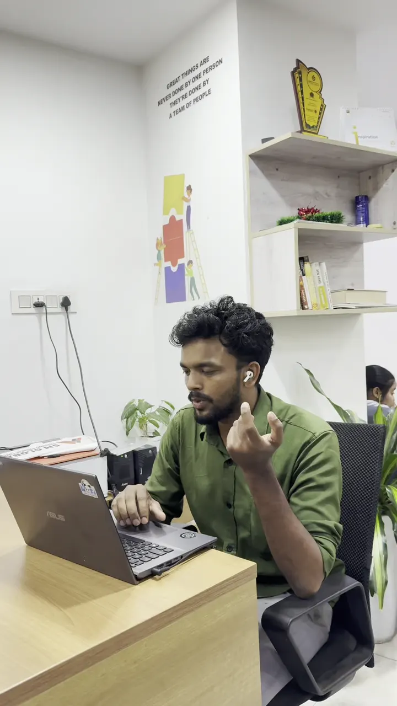

Your own parent account
A separate parent login on the YoungMinds LMS, apart from your child’s student account.
Ages 11–18100 daysReal startup
YoungPreneurAi takes students from experimenting with mini-ventures to building their own startup, finding customers and pitching something they created.
Want to see the programme from the inside? Try 7 days live for ₹999
*Seed funding of up to ₹1,00,000 is an opportunity awarded on evaluation at Investor Pitch Day. It is not guaranteed for every participant.
The missing piece
School gives students a strong foundation. What most students rarely get is a chance to use it on something of their own — to:
YoungPreneurAi is that chance. It runs alongside school, not instead of it — and it turns what students already know into something they can try, test and build.
Learn it vs. live it
The 100-day map
From experimenting with mini-ventures to building and selling their own startup.
Start by experiencing business.
Students work through three different mini-venture scenarios — so they experience entrepreneurship before deciding what they want to build.
Core outcomeReal sales experience
Now build something of your own.
Students move from experiments to their own startup — and keep testing, changing and improving it based on what real people say.
Core outcomeYour own startup with a clear selling point
Take it to the market.
Core outcomeSelling experience + investor pitch
100 days. One continuous journey.
What your child walks away with
An opportunity identified through real-world observation and customer conversations.
An early version of a product, developed and tested with real users.
A chance to understand customers, communicate value and attempt real selling.
Problem-solving, communication, experimentation, decision-making and presentation.
A record of their work, experiments, product development and startup-building progress.
Day 100 · Investor Pitch Day
Students present their startups to an evaluation panel and get the chance to show:
Seed funding opportunity
up to ₹1,00,000
Funding is awarded based on evaluation. Seed funding is an opportunity, not a guaranteed amount for every participant.

Personal mentorship
Not a tuition class. Think of it as having someone in your corner while you build your first startup — someone who responds to what you actually did this week.
For parents
For 100 days your child is the founder, you’re on the board, and YoungMinds is the consultant. You see the progress without having to supervise every task.
A separate parent login on the YoungMinds LMS, apart from your child’s student account.
See what your child is working on and how the journey is progressing, phase by phase.
Progress and programme updates are shared through your parent account and the official programme channel set up at onboarding.
Short reviews with your child and their mentor at the end of each phase: Day 25, Day 75 and Day 100.
Student journeys
Every YoungPreneurAi journey moves through the same five stages. This is what students produce at each one.
We share student work here only with the student’s and parent’s permission. Want to see examples before you decide? Ask us on WhatsApp.
How it’s built
Two ways to start
One session · 60 minutes
A 1:1 online session to explore your interests, discover opportunities and work towards your first startup idea.
Booked and paid on our Wise.live booking page.
Seven days · live programme experience
Experience YoungPreneurAi for a week before deciding whether to continue.
Opens WhatsApp — our team confirms the next start date with you.
Refundable trial fee. Please confirm the refund conditions with our team before you pay.
Not sure which? ₹99 is one conversation to find a direction. ₹999 is a week inside the programme.
Parent questions
Something we haven’t covered? Message us on WhatsApp.
A 100-day online innovation and entrepreneurship programme by YoungMinds.app for students aged 11–18. With a personal 1:1 mentor, students try mini-ventures, build their own startup and an MVP, attempt real sales and pitch their startup at Investor Pitch Day.
Students aged 11 to 18.
No. The first phase exists for exactly this: students try three mini-venture scenarios before deciding what they want to build. Ideas come from doing, not from waiting for inspiration.
No. An MVP is simply the first version of a product that real people can try. Depending on the idea, it may or may not involve any code. The mentor helps the student choose a sensible first version.
Yes. The programme is built for this age group, and because mentoring is 1:1, challenges are set around each student’s age, interests and progress. The work is practical and small-scale: talking to people, making an offer, trying to sell, improving a product.
It’s designed to run alongside school: one weekly 1:1 session online, plus tasks between sessions. Students book session slots through the LMS (subject to mentor availability), so they can plan around school. If you expect a heavy exam period, ask us how scheduling works before joining.
One 1:1 mentor session of about an hour each week, plus independent work on assigned tasks and experiments between sessions. The time for that work varies by student and phase, so ask us for a typical week when you talk to us.
Each week the student meets their mentor online, 1:1. The mentor looks at what the student actually tried, gives feedback and sets the next challenge based on that work. Between sessions the student works on tasks, submits work in the LMS and books the next slot.
Yes. Every student has a dedicated mentor for the 100-day journey.
A validated idea, a working MVP tested with real users, real sales experience and a startup portfolio that records their experiments and progress. What the product looks like depends on the problem your child chooses to solve.
Three connected phases: Tinkering (Days 1–25) — three mini-ventures and real sales attempts; Innovation (Days 26–75) — the student’s own startup, MVP and repeated testing; Entrepreneurship (Days 76–100) — selling, customer conversations and preparing the pitch, ending at Investor Pitch Day.
₹99 is a single 60-minute 1:1 Startup Idea Session to explore interests and find a first startup direction. ₹999 is a seven-day live experience of the YoungPreneurAi programme itself, so you can see how it works before deciding to continue. The ₹999 fee is refundable; please confirm the refund conditions with our team before you pay.
Students present their startup to an evaluation panel: the problem, the product they built, what they learned from customers, their business model and their vision. Seed funding of up to ₹1,00,000 may be awarded based on the evaluation.
No. Seed funding is an opportunity, awarded based on evaluation at Investor Pitch Day. It is not a guaranteed amount for every participant, and ₹1,00,000 is the maximum, not a standard award.
Through a separate parent account on the YoungMinds LMS, updates through the official programme channel, and phase reviews with your child and their mentor on Day 25, Day 75 and Day 100.
Your child keeps what they built: the startup, the MVP and their portfolio. What comes next depends on the student and their startup, and it is discussed with you at the final review. Ask us about options for continuing.
Start with an idea.Explore possibilities.Build something of your own.
Don’t just learn entrepreneurship. Experience it. Build it. Sell it.